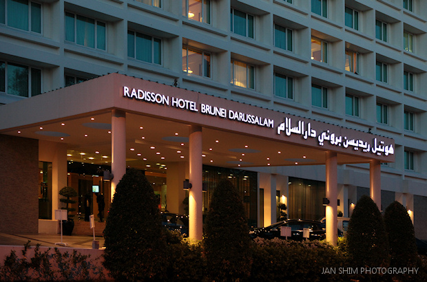
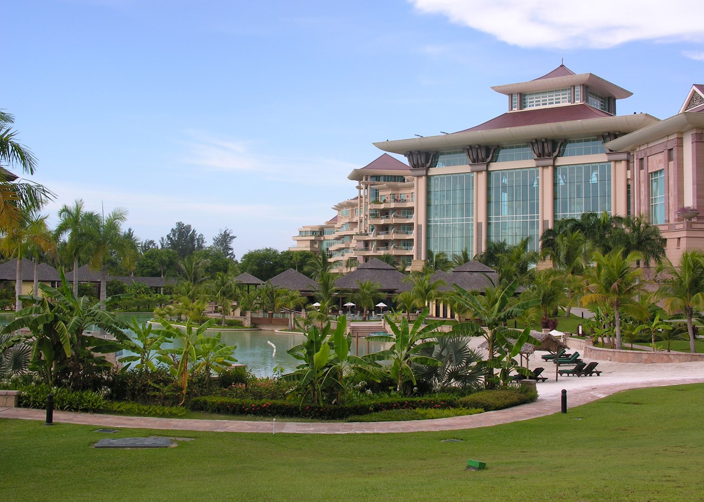
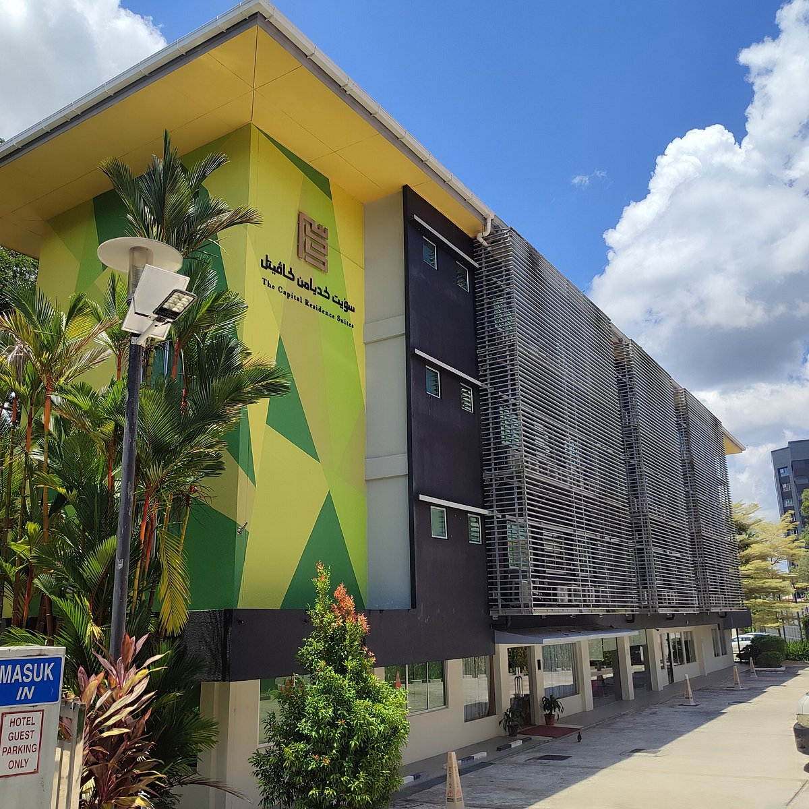
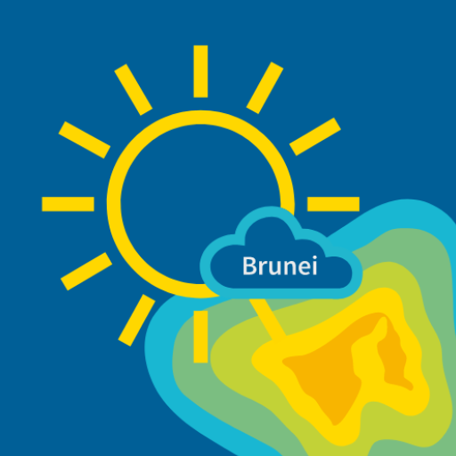

Plan Your Visit to Brunei
Visa and Entry Requirements
Make sure you prepare the necessary travel documents before arriving in Brunei.
Passport Requirements
Each guest must hold a valid passport (and visa(s), if required) for international travel to be allowed entry into each destination on their flight itinerary. Some countries require at least six months validity remaining on the passport.
Visa Information
All travelers must obtain E-Arrival Card registration approval before arriving in Brunei by air, land, or sea. No visa is required for stays of 90 days or less.
Arrival
Upon arrival, travelers clear immigration and customs with a valid passport (at least six months validity), a completed e-Arrival Card via the Brunei INRS Portal, and any required visa or e-Health declaration.
Travel Insurance
The travel insurance policy provides coverage in cases of unforeseen circumstances, for instance but not limited to, emergency medical treatment or cancellation or shorten your trip, as well as coverage for the loss or delay of your baggage.
Immigration Portal
Where to Stay in Brunei
Find your perfect stay in Brunei, from luxurious hotels and tranquil resorts to serviced apartments and budget-friendly motels. Whether you're looking for comfort, convenience, or a unique local experience, these accommodations offer a welcoming retreat for every type of traveler.

Radisson Hotel Brunei
Radisson Hotel is one of Brunei’s most recognized international hotel brands, known for its polished service, spacious rooms, and proximity to cultural landmarks. It’s popular among business travelers, diplomats, and tourists seeking upscale comfort in the capital.
Location: Bandar Seri Begawan
The Empire Brunei
The Empire Brunei is a world-class luxury resort in Kampong Jerudong, Brunei, offering opulent accommodations, private beaches, a championship golf course, and lavish amenities—ideal for high-end leisure, business retreats, and royal-level hospitality.
Location: Jerudong
The Capital Residence Suite
The Capital Residence Suites is a boutique-style hotel in Bandar Seri Begawan, Brunei, offering modern rooms, free airport transfers, and a central location near the city’s cultural landmarks—ideal for both leisure and business travelers.
Location: Bandar Seri BegawanFind out more about hotels, book here:
Getting Around Brunei
Not many people use transportation services because everyone usually have their own cars here but tourists would most likely have to use the services below.
Taxis and Dart
Taxis are available at the airport, hotels, and some city locations. Fares are metered, with a minimum charge of BND 3.50. Taxis can be booked by phone or via the Dart app.
Car Rental
International and local car rental agencies operate at the airport and in the city. A valid international driving permit or English-language license is required.
Public Buses
The main public transport is the Brunei-Muara Bus Service, operating in Bandar Seri Begawan and nearby areas. Buses run from 6:00 to 18:00, with fixed routes and fares (typically BND 1 per ride, cash only).
Water Taxis
Water taxis operate on the Brunei River, especially to Kampong Ayer (water village). Fares are negotiable and paid in cash.
Best Time to Visit Brunei

It's hot and humid all year round in Brunei. Bring cool clothes, but pack an umbrella too.
Temperatures rarely drop below 23°C in Brunei and high humidity is a factor all year.
You can visit any time, but Feb and Mar are driest, and perhaps the best time to go with National Day celebrated on 23 February.
From Mar-late Oct expect average temperatures in the high 20°Cs, pushing into the low 30°Cs sometimes. It’s fractionally cooler from late Oct-Jan, but these are also the wettest months and rains can restrict access to Temburong.
Useful Travel Tips
A few important things to remember during your visit.
Documents
Make extra copies of your passport and important documents. Don’t forget to e-mail a copy to yourself so you’ll almost always have access to them, one way or another.
Local Customs
Respect the traditional and local customs in the country you are visiting, learn about them as well. It can make a big difference in how you’re treated by locals
What to Pack
Only pack what you need and try to fit everything into a carry-on if possible. This will save you time and money at the airport, and make it easier to move around during your trip.
Hydration
Due to Brunei being a hot country, it is advised to always stay hydrated, especially because travelling makes you tire out more easily.
Suggested 3-Day Trip Plan
Make the most of your visit with this simple three-day travel suggestion.
Day 1, Explore the Capital
- Visit Omar Ali Saifuddien Mosque
- Explore the Royal Regalia Museum
- Take a water taxi to Kampong Ayer
- Enjoy local Bruneian food at restaurants
Day 2, Nature and Adventure
- Visit Ulu Temburong National Park
- Climb the high canopy walkaway
- Enjoy a longboat river ride
- Do an overnight rainforest stay at a resort or around the park
Day 3, Culture and Leisure
- Visit Jame' Asr Hassanil Bolkiah Mosque
- Explore the Gadong Night Market
- Enjoy a day at Jerudong Park
- Shop for traditional Bruneian souvenirs at local stores
Ready to Discover Brunei?
Experience the beauty, culture and hospitality of Brunei Darussalam. Your adventure awaits!
Contact Us